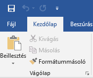
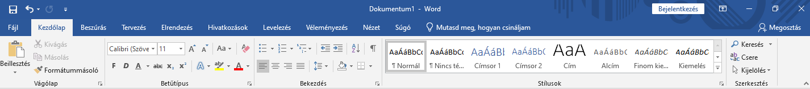
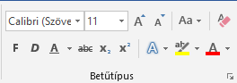
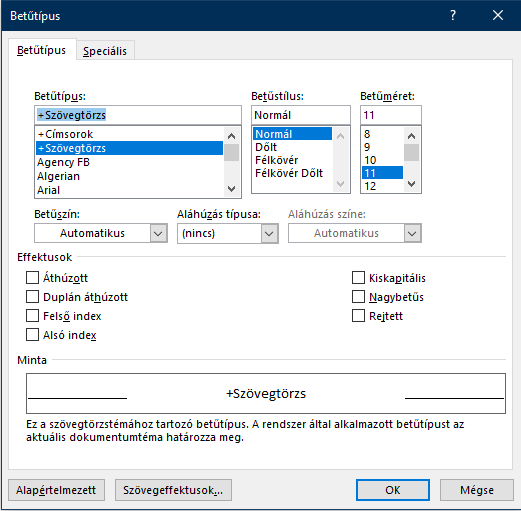
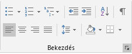
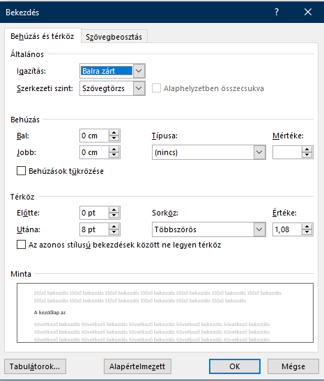
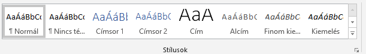
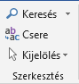

Bármilyen formázás előtt a legfontosabb a dokumentum elmentése melyet a bal felső sarokban lévő mentés ikonnal tehetünk meg.

Érdemes rendszeresen menteni mert a nem mentett munkánk bármilyen gond esetén elveszhet!
A mentés gombra kattintva megnyílik a mentés ablak, melyben ki kell választani a mentés helyét. Rákattintva a megfelelő helyre elnevezhetjük a fájlunkat és a mentés gomb segítségével elmenthetjük a kiválasztott helyre.
A kezdőlap az eszköztár alapértelmezetten megjelent része.

Itt láthatjuk, hogy a kék háttérben a kezdőlap szöveg háttere fehér, innen tudhatjuk, hogy most a kezdőlap részen vagyunk.
Ebben a részben vannak a Word leggyakrabban használt funkciói.
Ezen funkciók:
- Vágólap
- Betűtípus
- Bekezdés
- Stílusok
- Szerkesztés
A vágólapon találhatóak a beillesztés,kivágás, másolás funkciók.
A betűtípus funkciói

A bal felső legördülő menüben kiválaszthatjuk a kívánt betűtípust. A legtöbb esetben különböző konvenciók alapján megadott betűtípus használata az ajánlott, de gyakorláshoz használhatunk bármilyen nekünk tetsző típust.
A mellette lévő legördülő menüben pedig a betűméretet állíthatjuk be.
A mellettük lévő négy ikon sorban a betűméret növelése, kicsinyítése, kis és nagybetűk,a negyedik radír ikon pedig a formázás eltüntetése.
Az alattuk lévő sorban van a félkövér dőlt aláhúzott áthúzott betű, alsó és felső index melyeket képleteknél szoktak használni mind matematikában mind kémiában. Az utolsó három ikon a szövegünk kiemelésére szolgál, szövegstílus, szövegkiemelő, betűszín megváltoztatására használjuk. Főleg ha többen dolgoznak egy dokumentumon és szeretnék kiemelni a változtatásra szolgáló szöveget szokták használni.
A jobb alsó sarokban lévő kis nyíl megnyomásával megnyílik egy ablak ahol sokkal bővebben és egyszerre több mindent is beállíthatunk a betűtípushoz kapcsolódóan

A bekezdés funkciói

Az első három ikon segítségével beszúrhatunk felsorolásokat különböző módokon akár több szinten is.
A következő két ikon a behúzást állítja kisebb illetve nagyobb mértékre.
A sorban következő két ikon más funkciókat szolgál az A-Z sorba rendezi a megfelelő adatokat, ez leginkább egy beszórt táblázat adatainál lehet hasznos számunkra. A jobb felső sarok kis hangjegy ikonja pedig megmutatja azokat a karaktereket amelyeket normál beállításokkal nem láthatunk. Akkor nagyon hasznos ha ellenőrizni szeretnénk, hogy nem maradt fölösleges karakter a dokumentumban amitől máshogy néz ki mint, ahogy mi szeretnénk.
Az alsó sor első négy ikonja felesős a tartalom igazításáért balra,középre,jobbra vagy sorkizártan tehetjük meg a margók alapján. A következő ikonokkal beállíthatjuk a sorközt, a sor árnyékolását és a sor szegélyét.
A jobb alsó sarokban lévő kis nyíl segítségével a bekezdés funkcióit részletesebben is beállíthatjuk, láthatjuk az alján lévő minta részen hogy hogy is fog kinézni a formázott szövegünk

Stílusok funkciói

A stílusok funkcióiról és a jelentőségükről később még bővebben lesz szó, hiszen munkánk megkönnyítésének nagyon hasznos eszközei. Jelenleg, amit itt látunk azok az előre beépített stílusok, amiket a Word felajánl.
A Szerkesztés funkciói

Ezek segítségével kereshetünk a szövegben, cserélhetünk egy adott részletet egy másikra, kijelölhetünk. Hasznos funkciók melyek a repetitív dolgokat hivatottak egyszerűsíteni.
Nagyon fontos ha bármelyik funkciót nem értenénk ikon alapján ha egyszerűen rávisszük az egeret kiírja és részletesen elmagyarázza nekünk a Word!